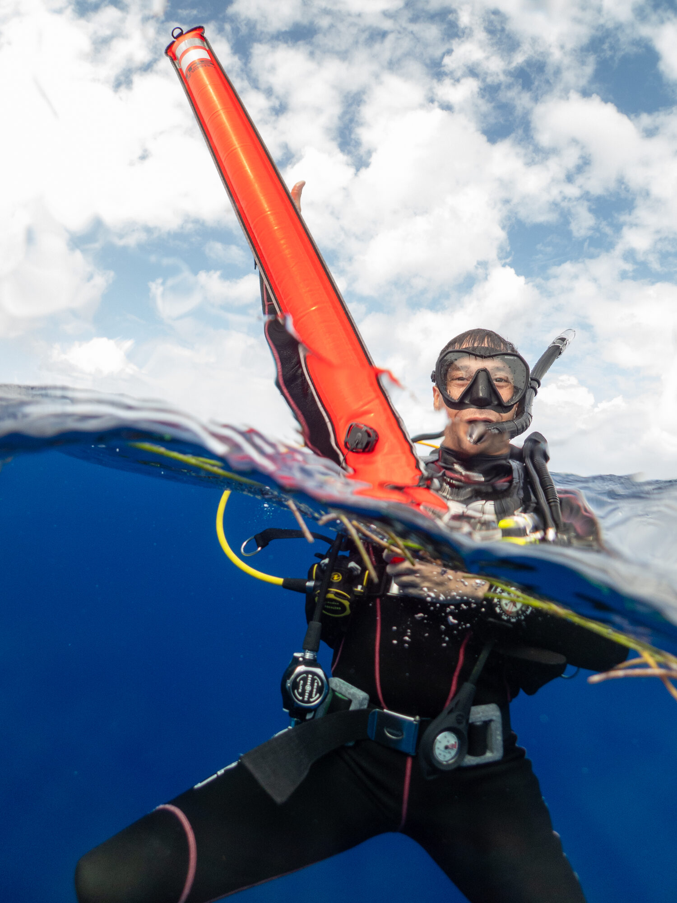

Buceo
Aprende a bucear en Puerto Escondido
Cursos de buceo SSI en grupos pequeños y clases de fotografía, en español o inglés, con un instructor de buceo SSI que también es fotógrafo submarino profesional. Desde tu primera respiración bajo el agua hasta tu certificación — con fotos tuyas en cada inmersión.

Todos los cursos son en grupos pequeños y a tu ritmo, y todos incluyen fotos editadas tuyas bajo el agua.
Bautizo de buceoTry Scuba
Sin experiencia previa
- Tu primera inmersión, conmigo a tu lado
- Explicación y práctica de habilidades primero en agua tranquila y poco profunda
- Después, una inmersión guiada para conocer el arrecife
- Fotos editadas tuyas bajo el agua incluidas
SSI Basic DiverPoco tiempo
Certifícate en menos días
- Para viajeros que quieren una certificación y solo tienen unos días
- Te certifica para bucear con un profesional de buceo
- Pasa a Open Water en tu próximo viaje
- Fotos de tus inmersiones incluidas
SSI Open Water DiverTu licencia de buceo
Válida en todo el mundo
- Empieza la teoría en línea en la app MySSI antes de llegar
- Práctica de habilidades en agua tranquila y poco profunda, y luego cuatro inmersiones de entrenamiento en el mar
- Te certifica para bucear hasta 18 m con un compañero, en cualquier parte del mundo
- Fotos de tu curso incluidas
¿Ya estás certificado? Reserva una inmersión guiada con fotos: guío la inmersión y te fotografío a ti, a tu compañero y la vida marina, para que te lleves fotos profesionales. Pregunta en WhatsApp →
Para buzos y no buzos, principiantes y aficionados. Trae una cámara, una GoPro o solo tu celular.
Foto y video submarinoEspecialidad SSI
Para buzos certificados
- Cualquier cámara: GoPro, carcasa para celular o equipo completo
- Ajustes, luz y composición, aprendidos en inmersiones reales
- Revisión de tus fotos después de cada inmersión
- Certificación SSI Photo & Video
Clase de foto en el aguaSnorkel y apnea
Sin equipo de buceo
- Para quienes hacen snorkel, apnea o natación
- Tortugas, arrecife y fotos mitad arriba, mitad abajo desde la superficie
- Con GoPro, carcasa para celular o tu propia cámara
- Trucos para fotos más nítidas, más azules y menos turbias
Clase de fotografía en tierraCámara o celular
Todos los niveles
- Individual o en grupo pequeño, en exteriores por Puerto Escondido
- Ajustes de cámara, luz y composición
- Retratos, paisajes y fotografía de calle
- Nociones de edición para terminar tus fotos
-
Escríbeme
Mándame tus fechas por WhatsApp y cuéntame qué te gustaría hacer. Te respondo con horarios y precios.
-
Prepárate
En los cursos de certificación empiezas la teoría en línea. Antes de bucear llenas un breve cuestionario médico.
-
Bucea
Grupos pequeños, a tu ritmo, y tu instructor toma las fotos. Tus fotos editadas llegan después del curso.
¿Necesito nadar muy bien?
Para el bautizo de buceo solo necesitas sentirte cómodo en el agua. El curso Open Water incluye una prueba corta de nado y de flotación.
¿Hay una edad mínima?
Los cursos de certificación SSI empiezan a los 10 años. Escríbeme si se trata de niños más pequeños.
¿Puedo bucear si tengo una condición médica?
Antes de bucear respondes un cuestionario médico estándar para buzos. Algunas condiciones necesitan la autorización de un médico, así que revísalo antes de viajar.
¿Cuál es la mejor época para bucear en Puerto Escondido?
De noviembre a abril suele haber mar más tranquilo y agua más clara, y en invierno pasan las ballenas jorobadas.
¿De verdad están incluidas las fotos?
Sí. Cada curso de buceo incluye fotos editadas tuyas bajo el agua, tomadas por mí durante tus inmersiones.
¿En qué idiomas das clases?
Español e inglés.



¿Preguntas sobre cursos, equipo o fechas? Escríbeme por WhatsApp o mira mi trabajo submarino.